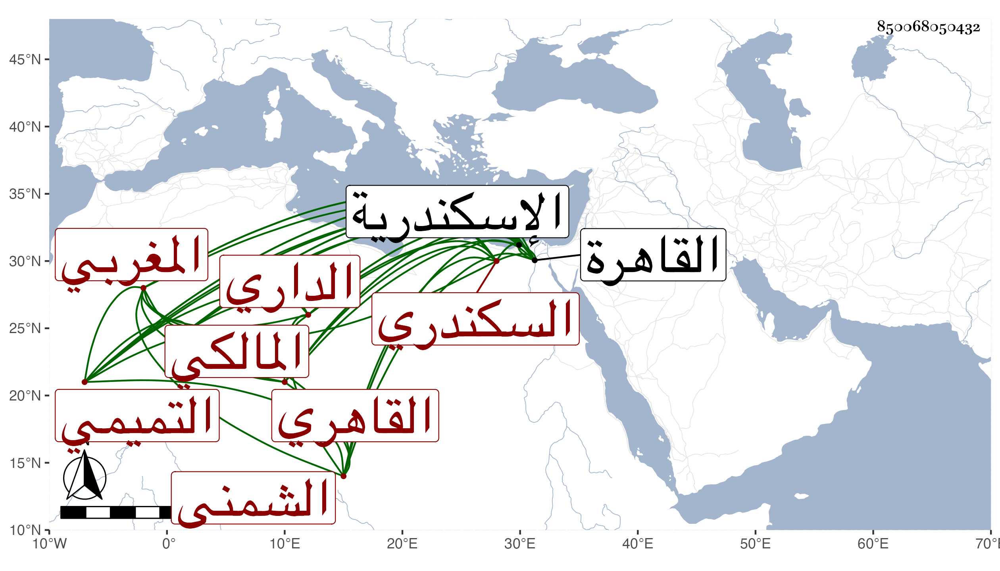

0902Sakhawi.DawLamic.ITO20230111-ara1.EIS1600.850068050432
Biography ID: 850068050432
197
محمد بن محمد بن حسن بن علي بن يحيى بن محمد بن خلف الله بن خليفة ابن محمد الكمال التميمي الداري الشمني . بضم المعجمة والميم وتشديد النون . المغربي الاصل السكندري ثم القاهري المالكي والد التقي أحمد أيضا ، وسماه شيخنا محمد ابن حسن بن محمد بن محمد بن خلف الله والصواب ما أثبته وكذا هو في معجمه لكن يزيادة محمد أيضا قبل خلف الله . ولد في أول سنة ست وستين وسبعمائة لأنه مع كونه كما قرأته بخطه لم يكن يخبر به أخبر بعض خيار أصدقائه وثقاتهم حسبما نقله ولده عنه أن الفرنج لما أخذت اسكندرية كان عمره سنة وكان أخذهم لها في يوم الجمعة ثالث عشري المحرم سنة سبع وستين . وقال شيخنا في معجمه أنه ولد قبل السبعين ، وفي إنبائه سنة بضع وستين ، واشتغل بالعلم في بلده ومهر وسمع من البهاء الدماميني والتاج بن موسى وغيرهما كأبي محمد القروى ، وأجاز له خلق باستدعائه وأخذ عن العراقي وتخرج به وبالبدر الزركشي وغيرهما وسمع الكثير من شيوخنا فمن قبلهم ، وتقدم في الحديث وصنف فيه ، وقال الشعر الحسن واستوطن القاهرة وكان خفيف ذات اليد وأصيب بآفة في بعض كتبه وأجزائه وتنزل في طلبة المحدثين بالجمالية أول ما فتحت ثم تركت له التدريس في سنة تسع عشرة فدرس به ثم عرضت له علة في أواخر التي تليها ثم نقه ورجع إلى منزله وتمرض به حتى مات في ليلة الخميس حادي عشر ربيع الأول سنة احدى وعشرين بالجامع الازهر وقد سمعت من فوائده كثيرا وشرح نخبة الفكر بل نظمها أيضا وكتب عنه شيخنا العراقي في وفياته وفاة التاج بن موسى . وكان جده الاعلى محمد بن خلف الله شافعيا متصدرا بجامع عمرو وكتب عنه الرشيد العطار في معجمه وضبطه . قلت وكانت وفاة أبي صاحب الترجمة باسكندرية في سنة إحدى وسبعين وسبعمائة ورأيت بخط الكمال مجاميع وأجزاء واستفدت منها وطالعت شرحه للنخبة بل عمل متنا مستقلا رأيته أيضا . ومما كتبه من نظمه :
| جزى الله أصحاب الحديث مثوبة | وبوأهم في الخلد أعلى المنازل |
| فلولا اعتناهم بالحديث وحفظه | ونفيهم عنه ضروب الاباطل |
| وإنفاقهم أعمارهم في طلابه | وبحثهم عنه بجد مواصل |
| لما كان يدري من غدا متفقها | صحيح حديث من سقيم وباطل |
| ولم يستبن ما كان في الذكر مجملا | ولم ندر فرضا من عموم النوافل |
| لقد بذلوا فيه نفوسا نفيسة | وباعوا بخط آجل كل عاجل |
| فحبهم فرض على كل مسلم | وليس يعاديهم سوى كل جاهل |
وقوله :
| ومن يأخذ العلم عن شيخ مشافهة | يكن من الزيف والتصحيف في حرم |
| ومن يكن آخذا للعلم من صحف | فعلمه عند أهل العلم كالعدم |
وهو في عقود المقريزي وقال أنه برع في الفقه والاصول وكان من خيار الناس مع قلة ذات اليد ، وخبط في نسبه فقال : محمد بن حسن بن محمد بن عبد الله بن محمد بن خلف الله . والصواب ما تقدم .
